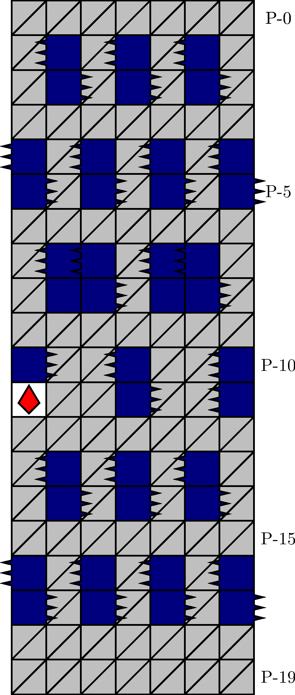
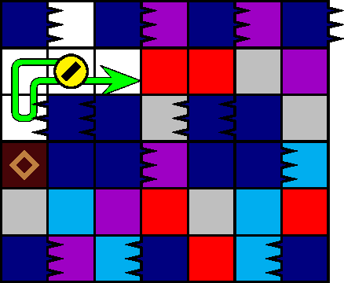

一般指針
エリア・密針


指針
密針は，迂遠でなければザクロを取得して潜行します．
解説
密針とは，図 3.2.6.1*1のエリアを指します． 500 m型の 82 行目に確率で出現します． P-1 行目の針の配列によって同定されます．
エリア内には，塊が多数出現することがあります．塊の出現割合に応じて，潜行速度を下げることが推奨されます．特に，塊の落下に注意しつつ，図 3.2.6.2 に代表されるヘコミに進入しないよう潜行します．図の地形では，針の刺突に間に合わないため，塊を破壊する前にもとの位置に戻らなければなりません．「愚形・迷子犬」と「愚形・ヘコミ」も参照してください．
寿命確保のためにザクロの取得は推奨されます．
脚注
- *1 図のブロックは左上から横に描画されていますが，ゲーム中のブロックは右上から横に描画されます．このため，図での針の表示（P-7 行目と P-8 行目）は実際のものとは異なります．